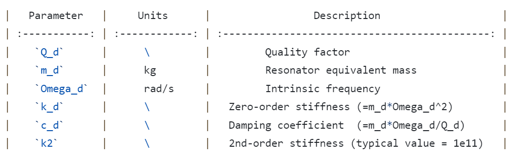
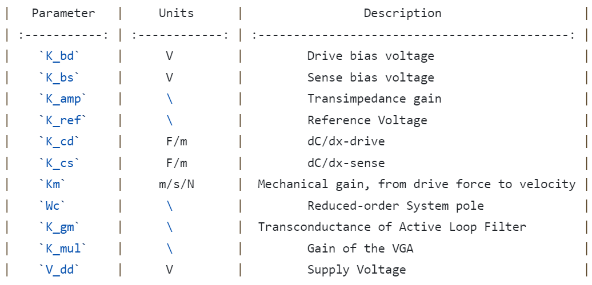

Fast Evaluation Model for Phase Noise in MEMS Sensors: MEMS-PN
MEMS-PN
Phase noise and frequency noise extraction and analysis tool for MEMS systems.
Background
MEMS-PN is an application designed to extract and analyse phase and frequency noise in MEMS systems. The goals for this application are:
The application offers a more efficient alternative to traditional transient simulations with Simulink model for extracting the phase noise of the MEMS system.
The parameters in the model used for this application can be adjusted to accommodate different circuit.
The application contains the MEMS system architecture shown below. It consists of 4 modules, namely MEMS resonator, TIA, active loop filter and PGA. The system includes 6 noise source inputs and 3 signal source outputs.
Installation
The MATLAB application needs your version of MATLAB higher than 2021b.
Please ensure that you have installed Bilibili SIMULINK before running the application.
Get the latest release of MEMS-PN MATLABapp.
Usage
Once you have installed and run the application, you can see the following interface.
On the left hand side, you can set the parameters of the system and carry out system stability analysis, calibration with reduced-order model transient simulation and phase noise extraction analysis.
On the right hand side, you can visualize the system structure and see the description of the parameters.
Mechanical parameters are responsible for describing the mechanical performance of the MEMS resonant.
|  |
Electric parameters are responsible for describing the specific details of each module.
|  |
“Equivalent Input Noise” corresponds to 6 different noise sources, supports flicker noise and white noise mixing inputs.
 |
The process of running the application is shown below.
1. Complete input of system parameters
2. Run “stability analysis” and “trans. calibration”
3. Check if the system can stabilise oscillations based on the results
4. If the system fails to stabilise in step 3, revert back to step 1
5. Complete input of noise source parameters
6. Run “PN noise”
7. Use “PN/FN” button to switch between phase and frequency noise
In the stability analysis, the application will give the zero-pole analysis of the system and the specific values of the RC filter.
The application supports interconversion between phase and frequency noise, and can query the frequency noise as well as calculate the total in-band noise.
Contributors
Zhihang Zhang, Shanghai Jiao Tong University
Benhao Huang, Shanghai Jiao Tong Unversity
Jian Zhao, Shanghai Jiao Tong University
Cite our Papers
Zhao Jian , Zhao Yang , Wang Xi , Xia Guoming , Qiu Anping , Su Yan and Xu Yong Ping, “A system decomposition model for phase noise in silicon oscillating accelerometers”, IEEE Sensors Journal, pp. 5259–5269, 2016.
Zhao Jian , Xu Yong Ping and Su Yan, “A System-decomposition Model for MEMS Silicon Oscillating Accelerometer”, River Publishers, pp. 133, 2019